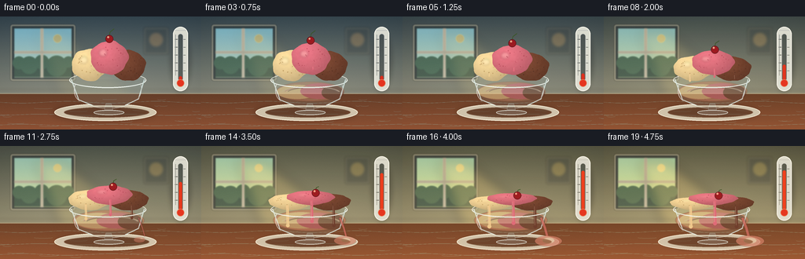
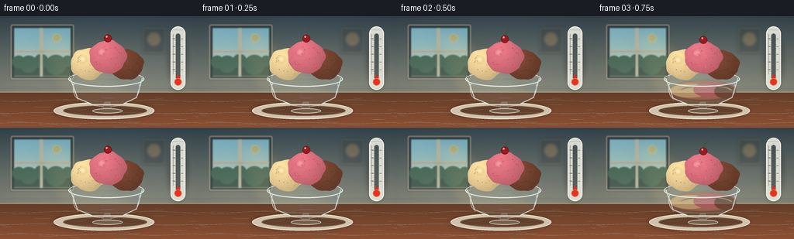

CODING AGENTS AS PIXEL WORLD MODELS
traex/GPT-5.6-Sol · phygen_099
点击播放 · 原生 RGB 像素
逐轮保存的候选
回放视频、检查图与代码变化。
每份候选均可单独播放。实际图片检查记录在下方工具轨迹中。
候选 01播放与检查图
点击播放 · 原生 RGB 像素


展开代码变化
--- 上一保存版本
+++ 本次保存版本
@@ -0,0 +1,317 @@
+from pathlib import Path
+import math
+import numpy as np
+from PIL import Image, ImageDraw, ImageFilter
+import artifact_io
+
+# Deterministic, supersampled procedural renderer.
+W, H, N, SCALE = 256, 144, 20, 4
+SW, SH = W * SCALE, H * SCALE
+CASE_DIR = Path(__file__).resolve().parent
+rng = np.random.default_rng(9917)
+
+
+def sc(v):
+ return int(round(v * SCALE))
+
+
+def pts(seq):
+ return [(sc(x), sc(y)) for x, y in seq]
+
+
+def smooth(x):
+ x = max(0.0, min(1.0, x))
+ return x * x * (3.0 - 2.0 * x)
+
+
+def rgba_layer():
+ return Image.new("RGBA", (SW, SH), (0, 0, 0, 0))
+
+
+def composite(base, layer):
+ return Image.alpha_composite(base, layer)
+
+
+def ellipse_blur(box, color, blur):
+ lay = rgba_layer()
+ ImageDraw.Draw(lay).ellipse(tuple(sc(v) for v in box), fill=color)
+ return lay.filter(ImageFilter.GaussianBlur(sc(blur)))
+
+
+def gradient_background(heat):
+ # Warmth increases over the timelapse, while retaining rich shadows.
+ y = np.linspace(0, 1, SH, dtype=np.float32)[:, None]
+ top = np.array([52 + 34*heat, 72 + 18*heat, 83 - 13*heat], np.float32)
+ bot = np.array([178 + 29*heat, 174 + 19*heat, 151 - 4*heat], np.float32)
+ arr = top[None, None, :] * (1-y[:, :, None]) + bot[None, None, :] * y[:, :, None]
+ arr = np.broadcast_to(arr, (SH, SW, 3)).copy()
+ # Gentle fixed vignette.
+ yy, xx = np.mgrid[0:SH, 0:SW]
+ vignette = 1.0 - 0.15*((xx-SW*.5)/(SW*.71))**2 - 0.12*((yy-SH*.48)/(SH*.67))**2
+ arr *= vignette[:, :, None]
+ return Image.fromarray(np.uint8(np.clip(arr, 0, 255)), "RGB").convert("RGBA")
+
+
+def draw_background(base, heat):
+ # Defocused cafe window and frame.
+ bg = rgba_layer(); d = ImageDraw.Draw(bg)
+ d.rounded_rectangle((sc(13), sc(10), sc(96), sc(82)), radius=sc(3), fill=(30,42,47,160), outline=(219,209,180,110), width=sc(2))
+ d.rectangle((sc(18), sc(15), sc(91), sc(77)), fill=(111+int(45*heat),163+int(23*heat),180-int(25*heat),255))
+ # Sky-to-horizon in window.
+ for yi in range(sc(16), sc(78)):
+ q=(yi-sc(16))/max(1, sc(62))
+ col=(int(115+72*q+48*heat), int(171+37*q+29*heat), int(191-6*q-32*heat),255)
+ d.line((sc(18),yi,sc(91),yi),fill=col)
+ # Soft skyline and greenery.
+ d.rectangle((sc(18),sc(61),sc(91),sc(77)), fill=(54,84,72,175))
+ for x,y,r in [(24,59,8),(37,62,11),(53,58,9),(72,63,13),(87,58,7)]:
+ d.ellipse((sc(x-r),sc(y-r),sc(x+r),sc(y+r)),fill=(45,103,76,115))
+ # Window divisions and warm sun disk.
+ d.rectangle((sc(51.5),sc(15),sc(55),sc(78)), fill=(229,218,194,170))
+ d.rectangle((sc(18),sc(44),sc(91),sc(47)), fill=(228,217,194,150))
+ d.ellipse((sc(68),sc(23),sc(78),sc(33)), fill=(255,239,154,130+int(90*heat)))
+ bg = bg.filter(ImageFilter.GaussianBlur(sc(0.75)))
+ base = composite(base,bg)
+
+ # Sunbeam broadens and brightens as heat rises.
+ beam=rgba_layer(); bd=ImageDraw.Draw(beam)
+ bd.polygon(pts([(44,18),(80,18),(183+11*heat,107),(78,107)]), fill=(255,220,128,20+int(42*heat)))
+ beam=beam.filter(ImageFilter.GaussianBlur(sc(7)))
+ base=composite(base,beam)
+
+ # Wall seams and soft framed picture at rear right.
+ decor=rgba_layer(); dd=ImageDraw.Draw(decor)
+ dd.line(pts([(0,93),(256,93)]), fill=(239,226,198,70), width=sc(1))
+ dd.rounded_rectangle((sc(183),sc(14),sc(214),sc(48)),radius=sc(2), fill=(47,54,53,75), outline=(225,211,179,90),width=sc(1))
+ dd.ellipse((sc(190),sc(21),sc(207),sc(38)),fill=(205,145+int(30*heat),83,70))
+ decor=decor.filter(ImageFilter.GaussianBlur(sc(1.4)))
+ return composite(base,decor)
+
+
+def draw_table(base, heat):
+ lay=rgba_layer(); d=ImageDraw.Draw(lay)
+ # Table begins at y=99; warm varnished walnut.
+ for yi in range(sc(98),SH):
+ q=(yi-sc(98))/max(1,SH-sc(98))
+ col=(int(98+41*q+14*heat),int(60+20*q+7*heat),int(40+12*q),255)
+ d.line((0,yi,SW,yi),fill=col)
+ d.line((0,sc(98),SW,sc(98)),fill=(226,194,147,95),width=sc(1))
+ for y0, amp, phase in [(109,1.2,0.0),(125,.8,1.9),(138,1.0,3.1)]:
+ line=[]
+ for x in range(0,257,3): line.append((x,y0+amp*math.sin(x/18+phase)))
+ d.line(pts(line),fill=(55,30,23,48),width=sc(.55))
+ # Fine static wood grain.
+ rr=np.random.default_rng(301)
+ for _ in range(28):
+ x=float(rr.uniform(0,256)); y=float(rr.uniform(102,143)); ln=float(rr.uniform(5,25))
+ d.arc((sc(x),sc(y),sc(x+ln),sc(y+rr.uniform(1,3))),0,180,fill=(43,25,20,32),width=sc(.35))
+ return composite(base,lay)
+
+
+def draw_thermometer(base, p):
+ # A readable visual gauge: mercury climbs dramatically from cool to hot.
+ shadow=ellipse_blur((217,17,242,96),(15,24,29,75),3)
+ base=composite(base,shadow)
+ lay=rgba_layer(); d=ImageDraw.Draw(lay)
+ d.rounded_rectangle((sc(220),sc(13),sc(239),sc(95)),radius=sc(9.5),fill=(235,237,226,228),outline=(255,255,246,245),width=sc(1))
+ d.rounded_rectangle((sc(226.2),sc(22),sc(232.8),sc(82)),radius=sc(3.2),fill=(94,104,101,95),outline=(255,255,255,150),width=sc(.6))
+ top=76-45*smooth(p)
+ d.rounded_rectangle((sc(227.5),sc(top),sc(231.5),sc(86)),radius=sc(2),fill=(216+int(22*p),45+int(17*p),29,255))
+ d.ellipse((sc(224.8),sc(80),sc(234.2),sc(89.5)),fill=(229,51,31,255),outline=(255,134,96,210),width=sc(.7))
+ # Graduations, with upper lines increasingly red-reflected.
+ for j,y0 in enumerate([29,39,49,59,69]):
+ d.line((sc(222.5),sc(y0),sc(225.8),sc(y0)),fill=(78,83,79,160),width=sc(.65))
+ d.line((sc(233.2),sc(y0),sc(236),sc(y0)),fill=(78,83,79,130),width=sc(.55))
+ d.line((sc(222.7),sc(17.5),sc(236.2),sc(17.5)),fill=(255,255,255,150),width=sc(.55))
+ # Specular stripe.
+ d.line((sc(223.3),sc(23),sc(223.3),sc(75)),fill=(255,255,255,100),width=sc(.8))
+ return composite(base,lay)
+
+
+def scoop_mask(cx,cy,rx,ry,seed,melt):
+ # An imperfect hand-scooped outline that smoothly flattens as it melts.
+ local=np.random.default_rng(seed)
+ phases=local.uniform(0,2*math.pi,3)
+ poly=[]
+ for i in range(180):
+ a=2*math.pi*i/180
+ wob=(1 + .030*(1-melt)*math.sin(5*a+phases[0]) + .018*math.sin(9*a+phases[1]))
+ # slightly heavier, spreading lower edge
+ x=cx+rx*wob*math.cos(a)
+ y=cy+ry*wob*math.sin(a)+max(0,math.sin(a))**4*(1.1+1.2*melt)
+ poly.append((x,y))
+ mask=Image.new("L",(SW,SH),0)
+ ImageDraw.Draw(mask).polygon(pts(poly),fill=255)
+ return mask
+
+
+def draw_scoop(base, cx, cy0, rx0, ry0, color, melt, seed, bits_color):
+ cy=cy0 + (14.5 if seed==22 else 12.0)*melt
+ rx=rx0*(1+.31*melt)
+ ry=ry0*(1-.69*melt)
+ mask=scoop_mask(cx,cy,rx,ry,seed,melt)
+ yy,xx=np.mgrid[0:SH,0:SW].astype(np.float32)
+ ux=(xx/SCALE-(cx-rx*.30))/(max(rx,1)*1.5)
+ uy=(yy/SCALE-(cy-ry*.45))/(max(ry,1)*1.8)
+ light=np.clip(1.12-.31*np.sqrt(ux*ux+uy*uy),.69,1.16)
+ # A stable fine crystalline/creamy texture.
+ tex_rng=np.random.default_rng(seed*77)
+ small=tex_rng.normal(0,1,(max(1,SH//8),max(1,SW//8))).astype(np.float32)
+ tex=Image.fromarray(np.uint8(np.clip(128+small*34,0,255))).resize((SW,SH),Image.Resampling.BICUBIC).filter(ImageFilter.GaussianBlur(sc(.22)))
+ noise=(np.asarray(tex).astype(np.float32)-128)/128
+ arr=np.zeros((SH,SW,4),dtype=np.uint8)
+ for k,c in enumerate(color): arr[:,:,k]=np.uint8(np.clip(c*light + noise*(5.5-2*melt),0,255))
+ arr[:,:,3]=np.asarray(mask)
+ scoop=Image.fromarray(arr,"RGBA")
+ base=composite(base,scoop)
+ # Pinpoint highlight, softened into the ice cream.
+ hi=rgba_layer(); hd=ImageDraw.Draw(hi)
+ hd.ellipse((sc(cx-rx*.55),sc(cy-ry*.50),sc(cx-rx*.12),sc(cy-ry*.05)),fill=(255,249,225,35+int(30*(1-melt))))
+ hi.putalpha(Image.composite(hi.getchannel('A'),Image.new('L',(SW,SH),0),mask))
+ base=composite(base,hi.filter(ImageFilter.GaussianBlur(sc(1.4))))
+ # Embedded fruit/chocolate flecks remain attached and sink with the scoop.
+ detail=rgba_layer(); dd=ImageDraw.Draw(detail); rr=np.random.default_rng(seed+100)
+ for _ in range(18):
+ nx=float(rr.uniform(-.75,.75)); ny=float(rr.uniform(-.65,.7))
+ if nx*nx+ny*ny < .76:
+ x=cx+nx*rx; y=cy+ny*ry
+ rad=float(rr.uniform(.35,.8))*(1-.35*melt)
+ dd.ellipse((sc(x-rad),sc(y-rad),sc(x+rad),sc(y+rad)),fill=(*bits_color,115))
+ detail.putalpha(Image.composite(detail.getchannel('A'),Image.new('L',(SW,SH),0),mask))
+ return composite(base,detail), (cx,cy,rx,ry)
+
+
+def melt_pool_layer(p):
+ lay=rgba_layer(); d=ImageDraw.Draw(lay)
+ q=smooth((p-.06)/.94)
+ if q<=0: return lay
+ # Pool caught inside glass: three colors broaden and blend over time.
+ d.ellipse((sc(91+4*(1-q)),sc(83-2*q),sc(184-2*(1-q)),sc(108)),fill=(189,119,88,100+int(70*q)))
+ d.ellipse((sc(96),sc(87-3*q),sc(148+10*q),sc(105)),fill=(240,201,137,130))
+ d.ellipse((sc(126-5*q),sc(85),sc(174),sc(105)),fill=(220,101,119,125))
+ d.ellipse((sc(153-5*q),sc(88-2*q),sc(181),sc(106)),fill=(101,57,43,145))
+ # Curving marbling streaks.
+ for off,col in [(0,(255,223,169,105)),(4,(238,130,139,80)),(8,(96,53,41,75))]:
+ arc=(sc(101+off),sc(89+off*.12),sc(177-off*.3),sc(106-off*.22))
+ d.arc(arc,195,347,fill=col,width=sc(.8+q*.8))
+ return lay.filter(ImageFilter.GaussianBlur(sc(.35)))
+
+
+def draw_glass_back(base,p):
+ # Soft cast shadow moves/shortens as the sun climbs.
+ shadow=ellipse_blur((68+8*p,113,196-3*p,132),(22,13,10,82),4.0-1.2*p)
+ base=composite(base,shadow)
+ # White ceramic saucer.
+ lay=rgba_layer(); d=ImageDraw.Draw(lay)
+ d.ellipse((sc(69),sc(111),sc(199),sc(133)),fill=(224,218,196,220),outline=(255,250,229,238),width=sc(1))
+ d.ellipse((sc(81),sc(115),sc(190),sc(129)),fill=(129,103,79,50),outline=(245,239,216,120),width=sc(.7))
+ # Transparent glass body back fill and back rim.
+ d.ellipse((sc(88),sc(71),sc(186),sc(91)),fill=(216,236,233,36),outline=(239,255,250,145),width=sc(1))
+ d.polygon(pts([(91,80),(101,106),(119,113),(159,113),(177,105),(184,80)]),fill=(191,222,222,30))
+ d.arc((sc(88),sc(71),sc(186),sc(91)),180,360,fill=(255,255,248,210),width=sc(1.1))
+ base=composite(base,lay)
+ return composite(base,melt_pool_layer(p))
+
+
+def draw_drips(base,p,geom):
+ lay=rgba_layer(); d=ImageDraw.Draw(lay)
+ # thresholded but smooth growth; each flavor melts at a different time.
+ specs=[(geom[0],.12,(241,205,145,245),-4),(geom[1],.04,(222,105,123,250),2),(geom[2],.20,(105,59,44,250),4)]
+ for (cx,cy,rx,ry),start,col,xoff in specs:
+ q=smooth((p-start)/(1-start))
+ if q<=0: continue
+ x=cx+xoff+math.sin(p*4+xoff)*1.1
+ y0=cy+ry*.53
+ y1=min(105,y0+4+27*q)
+ wid=1.4+2.2*q
+ d.line(pts([(x,y0),(x+.7*q,y1-wid)]),fill=col,width=sc(wid))
+ d.ellipse((sc(x+.7*q-wid*.65),sc(y1-wid*1.4),sc(x+.7*q+wid*.65),sc(y1)),fill=col)
+ d.line(pts([(x-wid*.2,y0+1),(x+.1,y1-wid*1.2)]),fill=(255,236,205,75),width=sc(.45))
+ return composite(base,lay)
+
+
+def draw_glass_front(base,p):
+ lay=rgba_layer(); d=ImageDraw.Draw(lay)
+ # Front bowl contour, stem and foot remain crisp reference geometry.
+ d.arc((sc(88),sc(71),sc(186),sc(91)),0,180,fill=(247,255,250,230),width=sc(1.2))
+ d.line(pts([(90.5,80),(100,106),(117,113)]),fill=(232,251,248,190),width=sc(1.15))
+ d.line(pts([(183.5,80),(176,105),(159,113)]),fill=(229,250,248,185),width=sc(1.15))
+ d.arc((sc(116),sc(107),sc(160),sc(117)),0,180,fill=(238,252,248,150),width=sc(.8))
+ d.polygon(pts([(134.5,111),(141.5,111),(144,121),(132,121)]),fill=(207,235,234,45),outline=(241,255,250,155))
+ d.ellipse((sc(119),sc(119),sc(158),sc(125.5)),fill=(211,232,228,45),outline=(246,255,248,190),width=sc(.9))
+ # Long vertical glass glints.
+ d.arc((sc(94),sc(79),sc(113),sc(108)),105,215,fill=(255,255,255,155),width=sc(1.0))
+ d.arc((sc(164),sc(79),sc(180),sc(106)),325,75,fill=(255,255,255,115),width=sc(.75))
+ return composite(base,lay)
+
+
+def draw_spill(base,p):
+ q=smooth((p-.58)/.42)
+ if q<=0: return base
+ lay=rgba_layer(); d=ImageDraw.Draw(lay)
+ # Overflow creeps over bowl and onto saucer late in the timelapse.
+ d.line(pts([(176,91),(181,104),(184,115)]),fill=(204,106,95,205),width=sc(1.2+2.2*q))
+ d.ellipse((sc(170-2*q),sc(116-2*q),sc(184+20*q),sc(123+5*q)),fill=(207,125,102,120+int(65*q)))
+ d.ellipse((sc(178),sc(117),sc(181+13*q),sc(120+4*q)),fill=(246,185,139,85))
+ lay=lay.filter(ImageFilter.GaussianBlur(sc(.35)))
+ return composite(base,lay)
+
+
+def draw_cherry(base,p,straw_geom):
+ cx0,cy,rx,ry=straw_geom
+ q=smooth(p)
+ cx=cx0+7*q
+ # rests atop scoop, then sinks and rolls right as it collapses
+ y=cy-ry*.78-7*(1-q)+1.8*q
+ lay=rgba_layer(); d=ImageDraw.Draw(lay)
+ # Curved stem.
+ stem=[(cx,y-4),(cx+1,y-9+2*q),(cx+6-2*q,y-13+5*q)]
+ d.line(pts(stem),fill=(54,85,41,230),width=sc(.9))
+ d.ellipse((sc(cx-5),sc(y-5),sc(cx+5),sc(y+5)),fill=(154,24,32,255),outline=(91,16,24,240),width=sc(.7))
+ d.ellipse((sc(cx-2.7),sc(y-3.6),sc(cx-.3),sc(y-1.1)),fill=(255,170,137,215))
+ return composite(base,lay)
+
+
+def render_frame(i):
+ t=i/(N-1)
+ p=smooth(t)
+ base=gradient_background(p)
+ base=draw_background(base,p)
+ base=draw_table(base,p)
+ base=draw_thermometer(base,p)
+ base=draw_glass_back(base,p)
+
+ # Back-to-front arrangement; flavor-specific melt rates create organic asymmetry.
+ choc=min(1,p*.86)
+ vanilla=min(1,p*.94)
+ berry=min(1,p*1.08)
+ base,g_choc=draw_scoop(base,163,62,22,19,(115,67,48),choc,33,(64,35,28))
+ base,g_van=draw_scoop(base,114,61,23,20,(239,211,152),vanilla,11,(151,113,59))
+ base,g_berry=draw_scoop(base,139,52,24,21,(223,113,128),berry,22,(159,51,70))
+ base=draw_drips(base,p,[g_van,g_berry,g_choc])
+ base=draw_cherry(base,p,g_berry)
+ base=draw_glass_front(base,p)
+ base=draw_spill(base,p)
+
+ # Warm edge light intensifies subtly without obscuring material colors.
+ warm=rgba_layer(); wd=ImageDraw.Draw(warm)
+ wd.rectangle((0,0,SW,SH),fill=(255,145,58,int(4+9*p)))
+ base=composite(base,warm)
+
+ # Fixed fine photographic grain avoids flat synthetic surfaces (no temporal flicker).
+ arr=np.asarray(base.convert('RGB')).astype(np.int16)
+ grain_rng=np.random.default_rng(7001)
+ grain=grain_rng.normal(0,1.05,(SH,SW,1))
+ arr=np.clip(arr+grain,0,255).astype(np.uint8)
+ out=Image.fromarray(arr,'RGB').resize((W,H),Image.Resampling.LANCZOS)
+ return np.asarray(out,dtype=np.uint8)
+
+
+def main():
+ frames=np.stack([render_frame(i) for i in range(N)],axis=0)
+ artifact_io.save(frames,CASE_DIR)
+ print(f"saved {len(frames)} RGB frames: {frames.shape}, {frames.dtype}")
+
+
+if __name__ == '__main__':
+ main()
可观测工具轨迹
实际执行的命令与返回图片。
命令 1exit 0
/bin/bash -lc "cat prompt.txt && printf '\\n--- GENERATION_RULES ---\\n' && cat GENERATION_RULES.md"
命令 2exit 0
/bin/bash -lc "cat task_spec.json && printf '\\n--- FILES ---\\n' && find . -maxdepth 2 -type f -printf '%p\\n' | sort"
命令 3exit 0
/bin/bash -lc "command -v ffmpeg; command -v blender; command -v python3; python3 - <<'PY' mods=['PIL','numpy','cv2','imageio','cairo','moviepy'] for m in mods: try: x=__import__(m); print(m,'OK',getattr(x,'__version__','')) except Exception as e: print(m,'NO',type(e).__name__) PY"
命令 4exit 0
/bin/bash -lc 'cat artifact_io.py'
命令 5exit 0
/bin/bash -lc "cat > generate.py <<'PY'
from pathlib import Path
import math
import numpy as np
from PIL import Image, ImageDraw, ImageFilter
import artifact_io
# Deterministic, supersampled procedural renderer.
W, H, N, SCALE = 256, 144, 20, 4
SW, SH = W * SCALE, H * SCALE
CASE_DIR = Path(__file__).resolve().parent
rng = np.random.default_rng(9917)
def sc(v):
return int(round(v * SCALE))
def pts(seq):
return [(sc(x), sc(y)) for x, y in seq]
def smooth(x):
x = max(0.0, min(1.0, x))
return x * x * (3.0 - 2.0 * x)
def rgba_layer():
return Image.new(\"RGBA\", (SW, SH), (0, 0, 0, 0))
def composite(base, layer):
return Image.alpha_composite(base, layer)
def ellipse_blur(box, color, blur):
lay = rgba_layer()
ImageDraw.Draw(lay).ellipse(tuple(sc(v) for v in box), fill=color)
return lay.filter(ImageFilter.GaussianBlur(sc(blur)))
def gradient_background(heat):
# Warmth increases over the timelapse, while retaining rich shadows.
y = np.linspace(0, 1, SH, dtype=np.float32)[:, None]
top = np.array([52 + 34*heat, 72 + 18*heat, 83 - 13*heat], np.float32)
bot = np.array([178 + 29*heat, 174 + 19*heat, 151 - 4*heat], np.float32)
arr = top[None, None, :] * (1-y[:, :, None]) + bot[None, None, :] * y[:, :, None]
arr = np.broadcast_to(arr, (SH, SW, 3)).copy()
# Gentle fixed vignette.
yy, xx = np.mgrid[0:SH, 0:SW]
vignette = 1.0 - 0.15*((xx-SW*.5)/(SW*.71))**2 - 0.12*((yy-SH*.48)/(SH*.67))**2
arr *= vignette[:, :, None]
return Image.fromarray(np.uint8(np.clip(arr, 0, 255)), \"RGB\").convert(\"RGBA\")
def draw_background(base, heat):
# Defocused cafe window and frame.
bg = rgba_layer(); d = ImageDraw.Draw(bg)
d.rounded_rectangle((sc(13), sc(10), sc(96), sc(82)), radius=sc(3), fill=(30,42,47,160), outline=(219,209,180,110), width=sc(2))
d.rectangle((sc(18), sc(15), sc(91), sc(77)), fill=(111+int(45*heat),163+int(23*heat),180-int(25*heat),255))
# Sky-to-horizon in window.
for yi in range(sc(16), sc(78)):
q=(yi-sc(16))/max(1, sc(62))
col=(int(115+72*q+48*heat), int(171+37*q+29*heat), int(191-6*q-32*heat),255)
d.line((sc(18),yi,sc(91),yi),fill=col)
# Soft skyline and greenery.
d.rectangle((sc(18),sc(61),sc(91),sc(77)), fill=(54,84,72,175))
for x,y,r in [(24,59,8),(37,62,11),(53,58,9),(72,63,13),(87,58,7)]:
d.ellipse((sc(x-r),sc(y-r),sc(x+r),sc(y+r)),fill=(45,103,76,115))
# Window divisions and warm sun disk.
d.rectangle((sc(51.5),sc(15),sc(55),sc(78)), fill=(229,218,194,170))
d.rectangle((sc(18),sc(44),sc(91),sc(47)), fill=(228,217,194,150))
d.ellipse((sc(68),sc(23),sc(78),sc(33)), fill=(255,239,154,130+int(90*heat)))
bg = bg.filter(ImageFilter.GaussianBlur(sc(0.75)))
base = composite(base,bg)
# Sunbeam broadens and brightens as heat rises.
beam=rgba_layer(); bd=ImageDraw.Draw(beam)
bd.polygon(pts([(44,18),(80,18),(183+11*heat,107),(78,107)]), fill=(255,220,128,20+int(42*heat)))
beam=beam.filter(ImageFilter.GaussianBlur(sc(7)))
base=composite(base,beam)
# Wall seams and soft framed picture at rear right.
decor=rgba_layer(); dd=ImageDraw.Draw(decor)
dd.line(pts([(0,93),(256,93)]), fill=(239,226,198,70), width=sc(1))
dd.rounded_rectangle((sc(183),sc(14),sc(214),sc(48)),radius=sc(2), fill=(47,54,53,75), outline=(225,211,179,90),width=sc(1))
dd.ellipse((sc(190),sc(21),sc(207),sc(38)),fill=(205,145+int(30*heat),83,70))
decor=decor.filter(ImageFilter.GaussianBlur(sc(1.4)))
return composite(base,decor)
def draw_table(base, heat):
lay=rgba_layer(); d=ImageDraw.Draw(lay)
# Table begins at y=99; warm varnished walnut.
for yi in range(sc(98),SH):
q=(yi-sc(98))/max(1,SH-sc(98))
col=(int(98+41*q+14*heat),int(60+20*q+7*heat),int(40+12*q),255)
d.line((0,yi,SW,yi),fill=col)
d.line((0,sc(98),SW,sc(98)),fill=(226,194,147,95),width=sc(1))
for y0, amp, phase in [(109,1.2,0.0),(125,.8,1.9),(138,1.0,3.1)]:
line=[]
for x in range(0,257,3): line.append((x,y0+amp*math.sin(x/18+phase)))
d.line(pts(line),fill=(55,30,23,48),width=sc(.55))
# Fine static wood grain.
rr=np.random.default_rng(301)
for _ in range(28):
x=float(rr.uniform(0,256)); y=float(rr.uniform(102,143)); ln=float(rr.uniform(5,25))
d.arc((sc(x),sc(y),sc(x+ln),sc(y+rr.uniform(1,3))),0,180,fill=(43,25,20,32),width=sc(.35))
return composite(base,lay)
def draw_thermometer(base, p):
# A readable visual gauge: mercury climbs dramatically from cool to hot.
shadow=ellipse_blur((217,17,242,96),(15,24,29,75),3)
base=composite(base,shadow)
lay=rgba_layer(); d=ImageDraw.Draw(lay)
d.rounded_rectangle((sc(220),sc(13),sc(239),sc(95)),radius=sc(9.5),fill=(235,237,226,228),outline=(255,255,246,245),width=sc(1))
d.rounded_rectangle((sc(226.2),sc(22),sc(232.8),sc(82)),radius=sc(3.2),fill=(94,104,101,95),outline=(255,255,255,150),width=sc(.6))
top=76-45*smooth(p)
d.rounded_rectangle((sc(227.5),sc(top),sc(231.5),sc(86)),radius=sc(2),fill=(216+int(22*p),45+int(17*p),29,255))
d.ellipse((sc(224.8),sc(80),sc(234.2),sc(89.5)),fill=(229,51,31,255),outline=(255,134,96,210),width=sc(.7))
# Graduations, with upper lines increasingly red-reflected.
for j,y0 in enumerate([29,39,49,59,69]):
d.line((sc(222.5),sc(y0),sc(225.8),sc(y0)),fill=(78,83,79,160),width=sc(.65))
d.line((sc(233.2),sc(y0),sc(236),sc(y0)),fill=(78,83,79,130),width=sc(.55))
d.line((sc(222.7),sc(17.5),sc(236.2),sc(17.5)),fill=(255,255,255,150),width=sc(.55))
# Specular stripe.
d.line((sc(223.3),sc(23),sc(223.3),sc(75)),fill=(255,255,255,100),width=sc(.8))
return composite(base,lay)
def scoop_mask(cx,cy,rx,ry,seed,melt):
# An imperfect hand-scooped outline that smoothly flattens as it melts.
local=np.random.default_rng(seed)
phases=local.uniform(0,2*math.pi,3)
poly=[]
for i in range(180):
a=2*math.pi*i/180
wob=(1 + .030*(1-melt)*math.sin(5*a+phases[0]) + .018*math.sin(9*a+phases[1]))
# slightly heavier, spreading lower edge
x=cx+rx*wob*math.cos(a)
y=cy+ry*wob*math.sin(a)+max(0,math.sin(a))**4*(1.1+1.2*melt)
poly.append((x,y))
mask=Image.new(\"L\",(SW,SH),0)
ImageDraw.Draw(mask).polygon(pts(poly),fill=255)
return mask
def draw_scoop(base, cx, cy0, rx0, ry0, color, melt, seed, bits_color):
cy=cy0 + (14.5 if seed==22 else 12.0)*melt
rx=rx0*(1+.31*melt)
ry=ry0*(1-.69*melt)
mask=scoop_mask(cx,cy,rx,ry,seed,melt)
yy,xx=np.mgrid[0:SH,0:SW].astype(np.float32)
ux=(xx/SCALE-(cx-rx*.30))/(max(rx,1)*1.5)
uy=(yy/SCALE-(cy-ry*.45))/(max(ry,1)*1.8)
light=np.clip(1.12-.31*np.sqrt(ux*ux+uy*uy),.69,1.16)
# A stable fine crystalline/creamy texture.
tex_rng=np.random.default_rng(seed*77)
small=tex_rng.normal(0,1,(max(1,SH//8),max(1,SW//8))).astype(np.float32)
tex=Image.fromarray(np.uint8(np.clip(128+small*34,0,255))).resize((SW,SH),Image.Resampling.BICUBIC).filter(ImageFilter.GaussianBlur(sc(.22)))
noise=(np.asarray(tex).astype(np.float32)-128)/128
arr=np.zeros((SH,SW,4),dtype=np.uint8)
for k,c in enumerate(color): arr[:,:,k]=np.uint8(np.clip(c*light + noise*(5.5-2*melt),0,255))
arr[:,:,3]=np.asarray(mask)
scoop=Image.fromarray(arr,\"RGBA\")
base=composite(base,scoop)
# Pinpoint highlight, softened into the ice cream.
hi=rgba_layer(); hd=ImageDraw.Draw(hi)
hd.ellipse((sc(cx-rx*.55),sc(cy-ry*.50),sc(cx-rx*.12),sc(cy-ry*.05)),fill=(255,249,225,35+int(30*(1-melt))))
hi.putalpha(Image.composite(hi.getchannel('A'),Image.new('L',(SW,SH),0),mask))
base=composite(base,hi.filter(ImageFilter.GaussianBlur(sc(1.4))))
# Embedded fruit/chocolate flecks remain attached and sink with the scoop.
detail=rgba_layer(); dd=ImageDraw.Draw(detail); rr=np.random.default_rng(seed+100)
for _ in range(18):
nx=float(rr.uniform(-.75,.75)); ny=float(rr.uniform(-.65,.7))
if nx*nx+ny*ny < .76:
x=cx+nx*rx; y=cy+ny*ry
rad=float(rr.uniform(.35,.8))*(1-.35*melt)
dd.ellipse((sc(x-rad),sc(y-rad),sc(x+rad),sc(y+rad)),fill=(*bits_color,115))
detail.putalpha(Image.composite(detail.getchannel('A'),Image.new('L',(SW,SH),0),mask))
return composite(base,detail), (cx,cy,rx,ry)
def melt_pool_layer(p):
lay=rgba_layer(); d=ImageDraw.Draw(lay)
q=smooth((p-.06)/.94)
if q<=0: return lay
# Pool caught inside glass: three colors broaden and blend over time.
d.ellipse((sc(91+4*(1-q)),sc(83-2*q),sc(184-2*(1-q)),sc(108)),fill=(189,119,88,100+int(70*q)))
d.ellipse((sc(96),sc(87-3*q),sc(148+10*q),sc(105)),fill=(240,201,137,130))
d.ellipse((sc(126-5*q),sc(85),sc(174),sc(105)),fill=(220,101,119,125))
d.ellipse((sc(153-5*q),sc(88-2*q),sc(181),sc(106)),fill=(101,57,43,145))
# Curving marbling streaks.
for off,col in [(0,(255,223,169,105)),(4,(238,130,139,80)),(8,(96,53,41,75))]:
arc=(sc(101+off),sc(89+off*.12),sc(177-off*.3),sc(106-off*.22))
d.arc(arc,195,347,fill=col,width=sc(.8+q*.8))
return lay.filter(ImageFilter.GaussianBlur(sc(.35)))
def draw_glass_back(base,p):
# Soft cast shadow moves/shortens as the sun climbs.
shadow=ellipse_blur((68+8*p,113,196-3*p,132),(22,13,10,82),4.0-1.2*p)
base=composite(base,shadow)
# White ceramic saucer.
lay=rgba_layer(); d=ImageDraw.Draw(lay)
d.ellipse((sc(69),sc(111),sc(199),sc(133)),fill=(224,218,196,220),outline=(255,250,229,238),width=sc(1))
d.ellipse((sc(81),sc(115),sc(190),sc(129)),fill=(129,103,79,50),outline=(245,239,216,120),width=sc(.7))
# Transparent glass body back fill and back rim.
d.ellipse((sc(88),sc(71),sc(186),sc(91)),fill=(216,236,233,36),outline=(239,255,250,145),width=sc(1))
d.polygon(pts([(91,80),(101,106),(119,113),(159,113),(177,105),(184,80)]),fill=(191,222,222,30))
d.arc((sc(88),sc(71),sc(186),sc(91)),180,360,fill=(255,255,248,210),width=sc(1.1))
base=composite(base,lay)
return composite(base,melt_pool_layer(p))
def draw_drips(base,p,geom):
lay=rgba_layer(); d=ImageDraw.Draw(lay)
# thresholded but smooth growth; each flavor melts at a different time.
specs=[(geom[0],.12,(241,205,145,245),-4),(geom[1],.04,(222,105,123,250),2),(geom[2],.20,(105,59,44,250),4)]
for (cx,cy,rx,ry),start,col,xoff in specs:
q=smooth((p-start)/(1-start))
if q<=0: continue
x=cx+xoff+math.sin(p*4+xoff)*1.1
y0=cy+ry*.53
y1=min(105,y0+4+27*q)
wid=1.4+2.2*q
d.line(pts([(x,y0),(x+.7*q,y1-wid)]),fill=col,width=sc(wid))
d.ellipse((sc(x+.7*q-wid*.65),sc(y1-wid*1.4),sc(x+.7*q+wid*.65),sc(y1)),fill=col)
d.line(pts([(x-wid*.2,y0+1),(x+.1,y1-wid*1.2)]),fill=(255,236,205,75),width=sc(.45))
return composite(base,lay)
def draw_glass_front(base,p):
lay=rgba_layer(); d=ImageDraw.Draw(lay)
# Front bowl contour, stem and foot remain crisp reference geometry.
d.arc((sc(88),sc(71),sc(186),sc(91)),0,180,fill=(247,255,250,230),width=sc(1.2))
d.line(pts([(90.5,80),(100,106),(117,113)]),fill=(232,251,248,190),width=sc(1.15))
d.line(pts([(183.5,80),(176,105),(159,113)]),fill=(229,250,248,185),width=sc(1.15))
d.arc((sc(116),sc(107),sc(160),sc(117)),0,180,fill=(238,252,248,150),width=sc(.8))
d.polygon(pts([(134.5,111),(141.5,111),(144,121),(132,121)]),fill=(207,235,234,45),outline=(241,255,250,155))
d.ellipse((sc(119),sc(119),sc(158),sc(125.5)),fill=(211,232,228,45),outline=(246,255,248,190),width=sc(.9))
# Long vertical glass glints.
d.arc((sc(94),sc(79),sc(113),sc(108)),105,215,fill=(255,255,255,155),width=sc(1.0))
d.arc((sc(164),sc(79),sc(180),sc(106)),325,75,fill=(255,255,255,115),width=sc(.75))
return composite(base,lay)
def draw_spill(base,p):
q=smooth((p-.58)/.42)
if q<=0: return base
lay=rgba_layer(); d=ImageDraw.Draw(lay)
# Overflow creeps over bowl and onto saucer late in the timelapse.
d.line(pts([(176,91),(181,104),(184,115)]),fill=(204,106,95,205),width=sc(1.2+2.2*q))
d.ellipse((sc(170-2*q),sc(116-2*q),sc(184+20*q),sc(123+5*q)),fill=(207,125,102,120+int(65*q)))
d.ellipse((sc(178),sc(117),sc(181+13*q),sc(120+4*q)),fill=(246,185,139,85))
lay=lay.filter(ImageFilter.GaussianBlur(sc(.35)))
return composite(base,lay)
def draw_cherry(base,p,straw_geom):
cx0,cy,rx,ry=straw_geom
q=smooth(p)
cx=cx0+7*q
# rests atop scoop, then sinks and rolls right as it collapses
y=cy-ry*.78-7*(1-q)+1.8*q
lay=rgba_layer(); d=ImageDraw.Draw(lay)
# Curved stem.
stem=[(cx,y-4),(cx+1,y-9+2*q),(cx+6-2*q,y-13+5*q)]
d.line(pts(stem),fill=(54,85,41,230),width=sc(.9))
d.ellipse((sc(cx-5),sc(y-5),sc(cx+5),sc(y+5)),fill=(154,24,32,255),outline=(91,16,24,240),width=sc(.7))
d.ellipse((sc(cx-2.7),sc(y-3.6),sc(cx-.3),sc(y-1.1)),fill=(255,170,137,215))
return composite(base,lay)
def render_frame(i):
t=i/(N-1)
p=smooth(t)
base=gradient_background(p)
base=draw_background(base,p)
base=draw_table(base,p)
base=draw_thermometer(base,p)
base=draw_glass_back(base,p)
# Back-to-front arrangement; flavor-specific melt rates create organic asymmetry.
choc=min(1,p*.86)
vanilla=min(1,p*.94)
berry=min(1,p*1.08)
base,g_choc=draw_scoop(base,163,62,22,19,(115,67,48),choc,33,(64,35,28))
base,g_van=draw_scoop(base,114,61,23,20,(239,211,152),vanilla,11,(151,113,59))
base,g_berry=draw_scoop(base,139,52,24,21,(223,113,128),berry,22,(159,51,70))
base=draw_drips(base,p,[g_van,g_berry,g_choc])
base=draw_cherry(base,p,g_berry)
base=draw_glass_front(base,p)
base=draw_spill(base,p)
# Warm edge light intensifies subtly without obscuring material colors.
warm=rgba_layer(); wd=ImageDraw.Draw(warm)
wd.rectangle((0,0,SW,SH),fill=(255,145,58,int(4+9*p)))
base=composite(base,warm)
# Fixed fine photographic grain avoids flat synthetic surfaces (no temporal flicker).
arr=np.asarray(base.convert('RGB')).astype(np.int16)
grain_rng=np.random.default_rng(7001)
grain=grain_rng.normal(0,1.05,(SH,SW,1))
arr=np.clip(arr+grain,0,255).astype(np.uint8)
out=Image.fromarray(arr,'RGB').resize((W,H),Image.Resampling.LANCZOS)
return np.asarray(out,dtype=np.uint8)
def main():
frames=np.stack([render_frame(i) for i in range(N)],axis=0)
artifact_io.save(frames,CASE_DIR)
print(f\"saved {len(frames)} RGB frames: {frames.shape}, {frames.dtype}\")
if __name__ == '__main__':
main()
PY
python3 generate.py
ls -lh pixels.npz inspection.png transition_check.png index.html frames/00.png frames/19.png"命令 6exit 1
/bin/bash -lc 'sha256sum pixels.npz frames/00.png frames/19.png generate.py > .tmp/checksums_before && python3 generate.py >/tmp/regenerate.log && sha256sum pixels.npz frames/00.png frames/19.png generate.py > .tmp/checksums_after && diff -u .tmp/checksums_before .tmp/checksums_after && cat /tmp/regenerate.log'
命令 7exit 0
/bin/bash -lc "python3 -m py_compile generate.py artifact_io.py && python3 - <<'PY'
from PIL import Image
import numpy as np, json
from pathlib import Path
spec=json.loads(Path('task_spec.json').read_text())
fs=[]
for i in range(spec['frames']):
im=Image.open(f'frames/{i:02d}.png')
assert im.mode=='RGB' and im.size==(spec['width'],spec['height'])
fs.append(np.asarray(im,dtype=np.int16))
a=np.stack(fs)
d=np.mean(np.abs(np.diff(a,axis=0)),axis=(1,2,3))
print('shape/mode:',a.shape,'RGB')
print('adjacent MAE:',np.round(d,3).tolist())
print('endpoint MAE:',round(float(np.mean(np.abs(a[-1]-a[0]))),3))
print('unique frames:',len({x.tobytes() for x in a}))
print('brightness first/last:',round(float(a[0].mean()),2),round(float(a[-1].mean()),2))
print('all smooth:',bool(np.max(d)<12 and np.min(d)>0.05))
PY"命令 8exit 0
/bin/bash -lc "python3 - <<'PY'
from PIL import Image
import numpy as np
# Print coarse edge-aware luminance thumbnails for first/mid/last as a structural sanity check.
chars=' .,:;irsXA253hMHGS#9B&@'
for n in [0,9,19]:
a=np.asarray(Image.open(f'frames/{n:02d}.png').convert('L').resize((64,30)))
# terminal-friendly local contrast + luminance
print('\\nFRAME',n)
for row in a:
print(''.join(chars[min(len(chars)-1,int(v)*(len(chars)-1)//256)] for v in row))
PY"命令 9exit 0
/bin/bash -lc 'sha256sum pixels.npz frames/00.png frames/19.png generate.py > .tmp/checksums_before && python3 generate.py > .tmp/regenerate.log && sha256sum pixels.npz frames/00.png frames/19.png generate.py > .tmp/checksums_after && diff -u .tmp/checksums_before .tmp/checksums_after && cat .tmp/regenerate.log'
保存候选 1 份；完成命令 9 次；可验证图片返回 0 张。原始 API 响应与完整日志保留在本地。